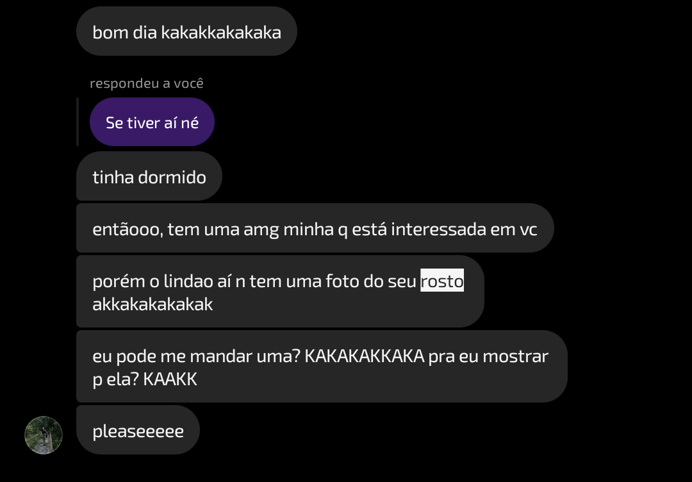
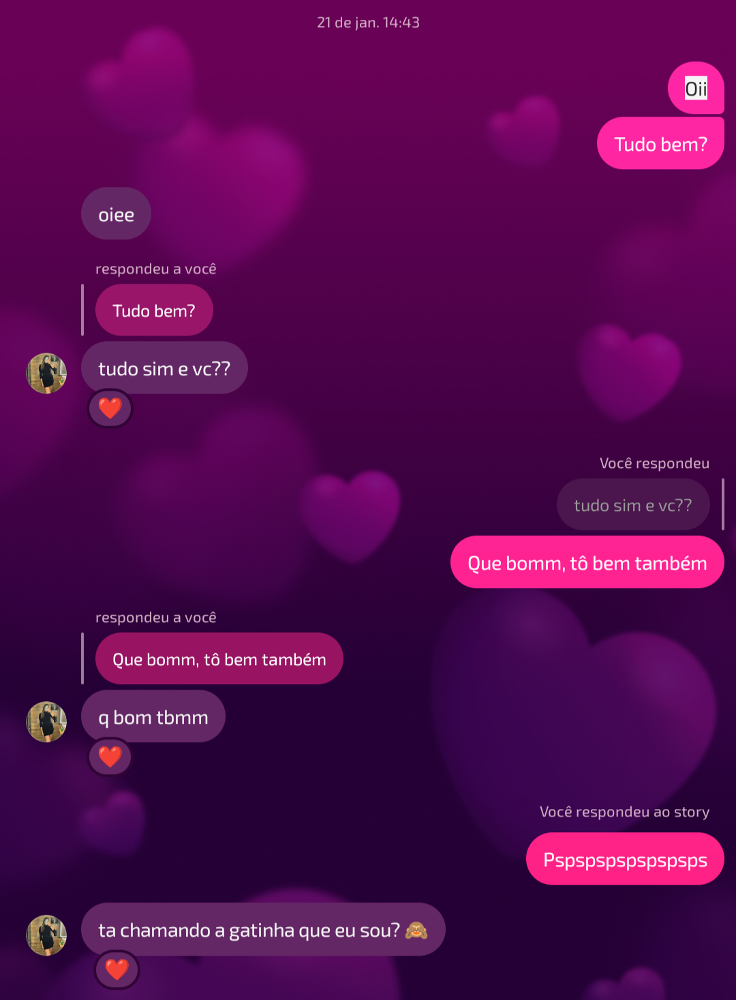
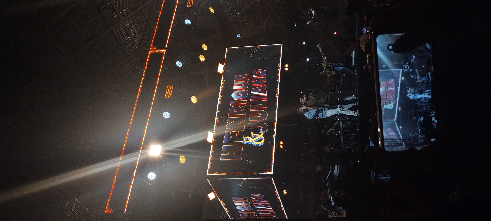
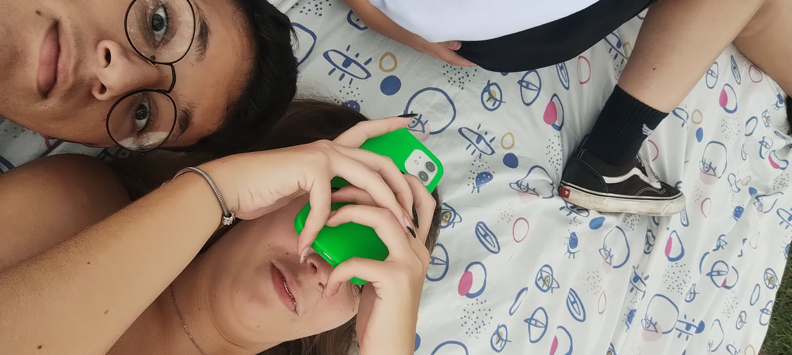
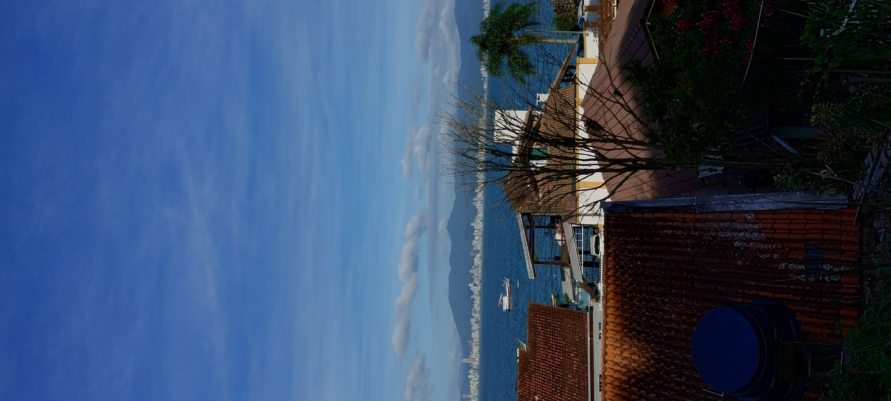
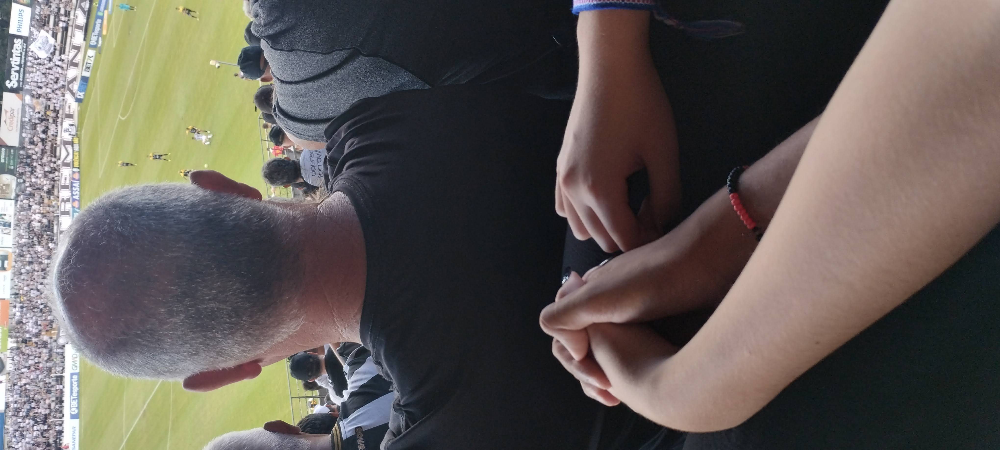
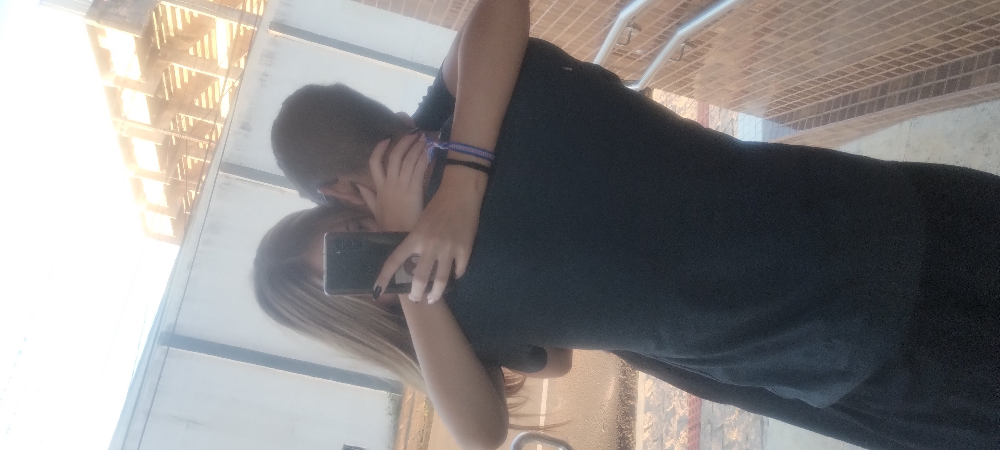
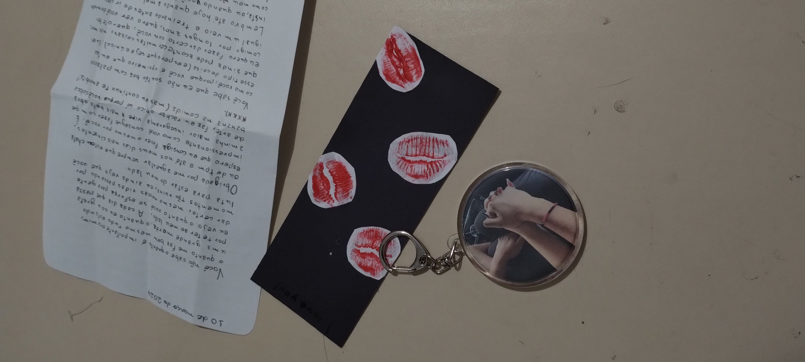
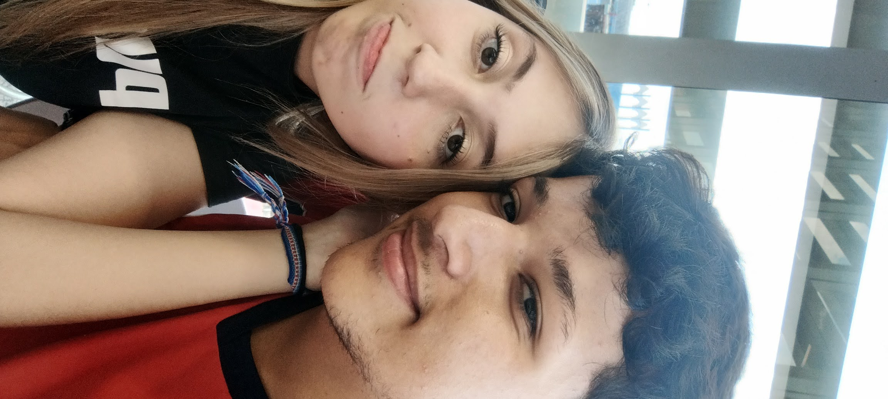
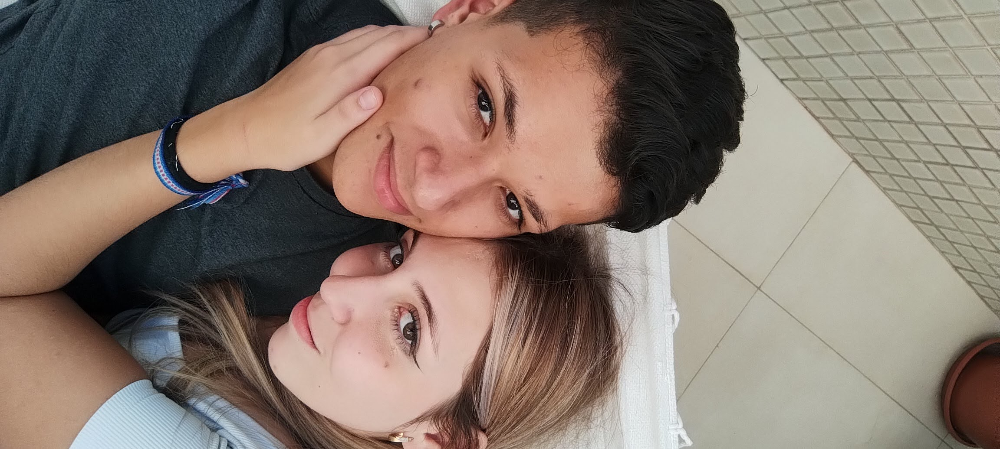

20/01/24 - APRESENTAÇÃO
"entãooo, tem uma amg minha q está interessada em vc, porém o lindao aí n tem uma foto do seu rosto allalalalalal, pode me mandar uma? KKAKAAKAAK pra eu mostrar pra ela"
E foi assim que a minha amiga, Melissa, veio me apresentar à minha Mandy
21/01/24 - "oii, tudo bem?"
Essas foram nossas primeiras mensagens trocadas. Foi um começo bem morno, já que ela não postava muita coisa e eu sempre estava ajudando o pai, mas mesmo assim segui firme tentando conquistá-la.
(Cada vez que eu via o perfil dela, ela estava mais linda, era normal isso?)
27/01/24 - MEUS 17 ANOS
Esse dia foi o meu aniversário, e eu estava muito animado pois ERA O SHOW DO HENRIQUE E JULIANO e eu ia começar meus 17 anos da melhor forma possível. Porém...
Dessa vez, o show era diferente. Dessa vez, eu estava com uma pessoa que não saía da minha cabeça, e que eu pensava o tempo todo...
E esse alguém era quem?
Essa menina linda, que alugou um triplex na minha cabeça KKKKKKKK
Durante o show, eu fiquei o tempo todo cantando as músicas como se estivesse cantando para ela. Será que pela primeira vez eu estava realmente apaixonado? Não era muito cedo? E se não for recíproco?
Todas essas questões ficavam martelando na minha cabeça, e eu ficava pensando em como seria o nosso primeiro encontro.
04/02/24 - O PRIMEIRO ENCONTRO
Eu acordei uma hora da tarde, virado de uma festa que eu estava com meu pai. Eu acordei, almocei e me arrumei da melhor forma que podia, ansioso pelo que me esperava: eu ia finalmente conhecer a Amanda!
Eu me enchi de perfume e fui para o lago. ESTAVA TREMENDO DE ANSIEDADE, e se não fosse a Mel me acalmar, eu tinha explodido!
Nossa primeira foto juntos, após ela SE ATRASAR PARA CHEGAR NO SEU PRIMEIRO ENCONTRO.
E eu fui embora com uma certeza: ela veio para ficar.
E desde então, eu fui me apaixonando cada vez mais por ela...
Após esse dia, nós sempre íamos no lago, todo fim de semana, e a vontade crescia, como tinha de ser...
12/02/24 - FUI PARA PRAIA
Depois disso, eu fui para a praia, e naquela semana a gente não se viu, e eu acho que ficamos umas três semanas sem nos ver.
18/02/24 - JOGO DO OPERÁRIO
Esse dia foi o primeiro jogo de futebol que vi na vida, e o nosso primeiro jogo juntos.
Esse dia, ela conheceu o primeiro membro da minha família: o meu irmão.
E nesse dia eu cumprimentei pela primeira vez o padrasto dela (me olhou com uma cara de MORTE que me gelou toda a espinha).
Depois do jogo, meu irmão foi num barzinho e eu fui na porta do apartamento dela ficar com ela.
Essa foto virou papel de parede de nós dois de TUDO por muito tempo.
E nesse dia levamos o primeiro susto: a gente de pegação na frente do prédio dela E A VÓ DELA APARECE ENTRANDO! A nossa sorte é que ela é MUITO gente boa e eu fiquei tranquilo depois!
Nesse dia, eu vi o melhor jogo do Corinthians depois de MUITO TEMPO, e o gol do Garro fez eu ficar sem voz KKKKKK (toda vez que eu vejo a Mandy meu Timão ganhava <3).
10/03/24 - O PRIMEIRO PRESENTE
Ela me deu um chaveiro e a primeira cartinha (obs. eu carrego o chaveiro na carteira até hoje).
23/04/24 - PRIMEIRA CARTINHA PARA ELA
Eu escrevi sobre o mar e dei as conchas mais bonitas que tinha para ela (foi um sacrifício para quem AMA o mar). (obs. não achei foto dessa cartinha :( )
10/04/24 - FIZ UMA SURPRESA PARA ELA
Eu fui de surpresa no Muffato, para almoçar com ela (até hoje meus pais não sabem kkkkkkkk).
14/04/24 - CONHECI MEUS SOGROS
Chegou o grande dia.
Eu cheguei na porta e TRAVEI DE ANSIEDADE, e ainda a Fer (minha cunhada) ficou me pilhando ainda mais.
Durante o almoço, o Luiz (meu sogro) ficou me olhando com cara de morte, mais uma vez, junto com o meu cunhado, Bruno (ele não me dá medo, diferente do sogro).
e essa foi só a primeira parte, mais partes serão atualizadas em breve...
E por último: eu te amo, Amanda.